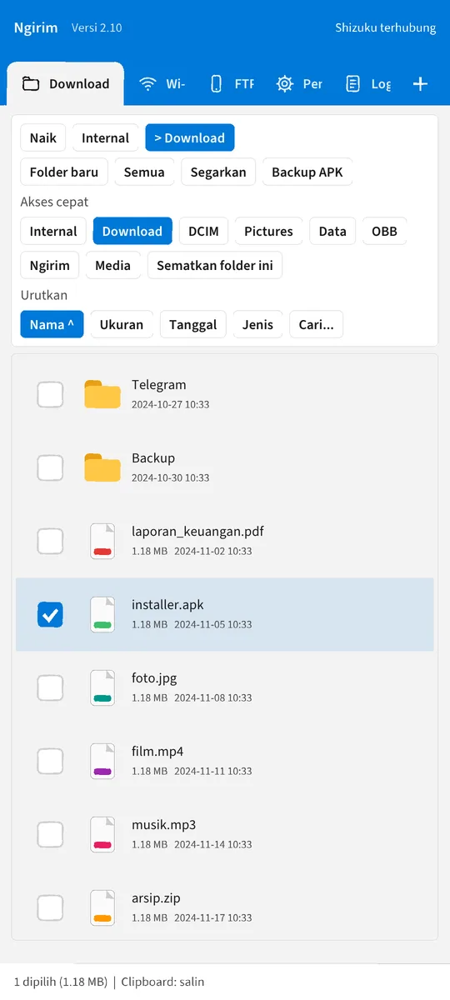
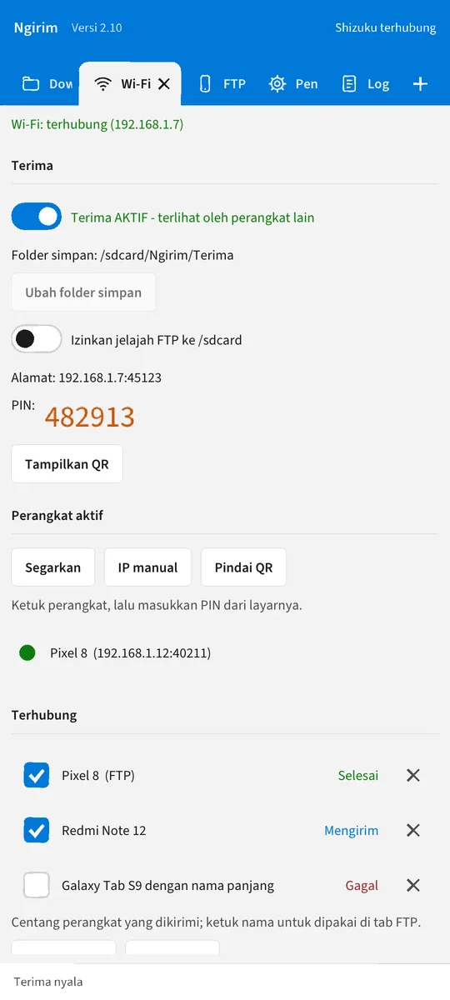
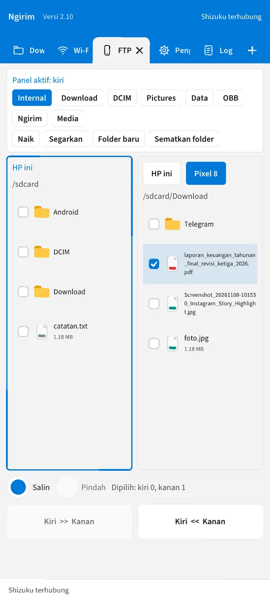
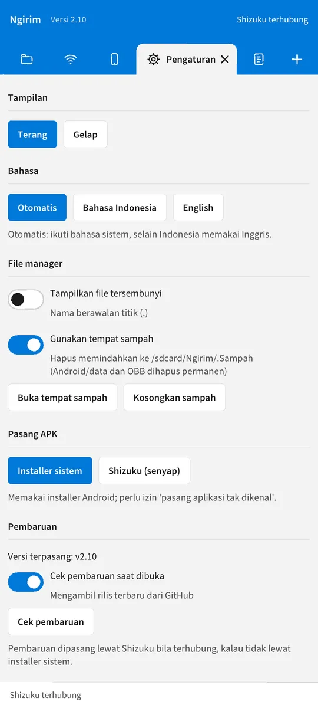

Pengirim file Wi-Fi, FTP dua panel, dan file manager dalam satu aplikasi Android. Akses Android/data dan Android/obb lewat Shizuku, tanpa root dan tanpa SAF.
A Wi-Fi file sender, dual-pane FTP and file manager in one Android app. Reach Android/data and Android/obb through Shizuku, no root and no SAF.


Semua yang dibutuhkan untuk memindahkan file, dalam satu aplikasi ringan.Everything you need to move files, in one light app.
Antar-HP di jaringan yang sama, dipasangkan dengan PIN 6 digit atau QR. File dan folder utuh, progres langsung.Phone to phone on the same network, paired by a 6-digit PIN or QR. Files and whole folders, live progress.
Centang beberapa HP, file dikirim berurutan dengan status tiap perangkat dan tombol ulangi yang gagal.Tick several phones; files go one after another with per-device status and a retry button.
Koneksi putus tidak mengulang dari nol: sisa file disimpan dan disambung otomatis.A dropped connection does not restart from zero: partial files are kept and resumed automatically.
Dua folder berdampingan, panel kanan bisa menunjuk HP lain. Salin dua arah dan multi-pilih dengan geser.Two folders side by side; the right pane can point at another phone. Two-way copy and drag multi-select.
Salin, potong, tempel, arsip ZIP, pratinjau gambar, menu tekan-lama, dan banyak tab file manager.Copy, cut, paste, ZIP, image preview, long-press menu and multiple file manager tabs.
Pasang APK/XAPK/APKS/APKM langsung, atau cadangkan aplikasi jadi .xapk beserta OBB dan data.Install APK/XAPK/APKS/APKM directly, or back apps up as .xapk with OBB and data.
Shizuku membuka Android/data dan Android/obb tanpa SAF; ada jalur cadangan Shizuku Legacy.Shizuku opens Android/data and Android/obb without SAF, with a Shizuku Legacy fallback.
Tema terang dan gelap, Bahasa Indonesia dan Inggris mengikuti sistem, pembaruan langsung dari GitHub Releases.Light and dark themes, Indonesian and English following the system, updates straight from GitHub Releases.
Geser untuk melihat. Gambar mengikuti tema terang atau gelap perangkat Anda.Swipe to browse. Images follow your light or dark theme.


Pasang di kedua HP, lalu:Install on both phones, then:
Android/data, hubungkan Shizuku dulu.Press Send. For Android/data, connect Shizuku first.